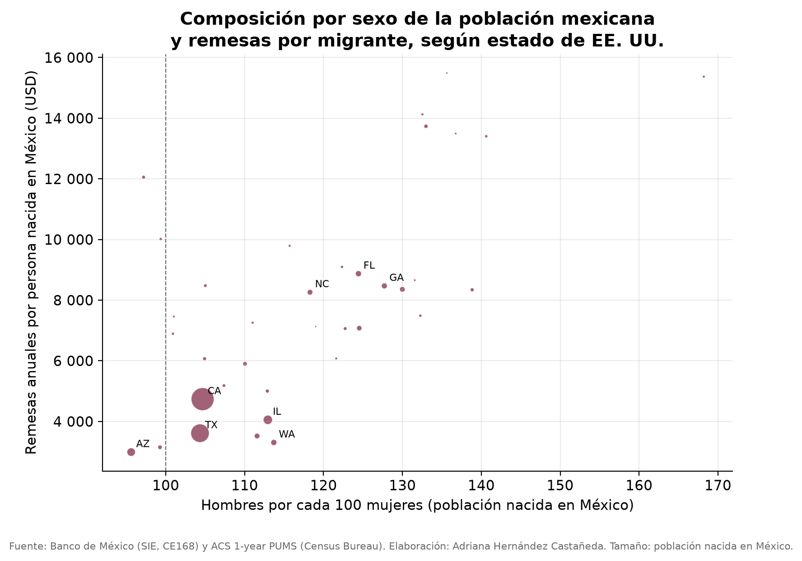
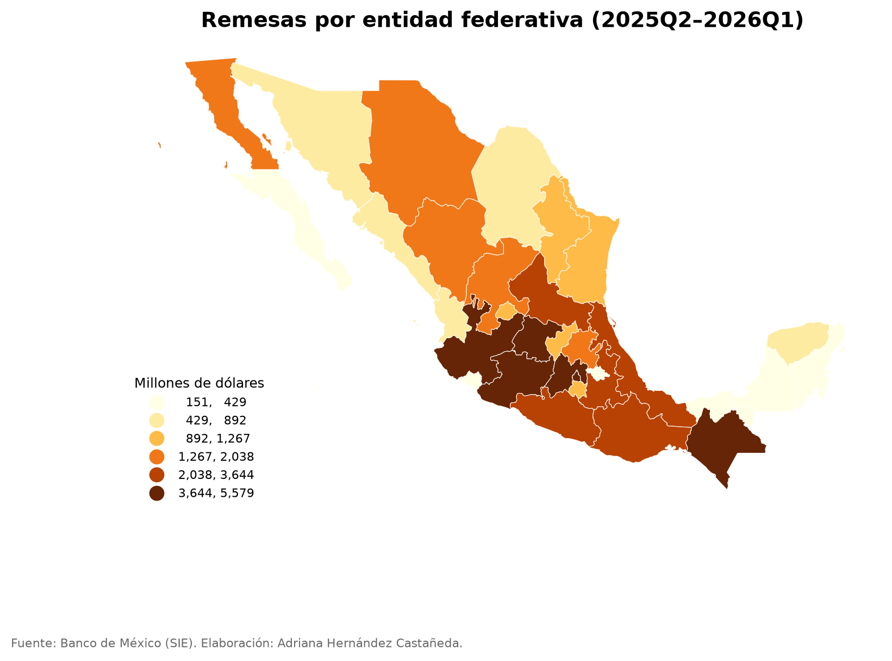
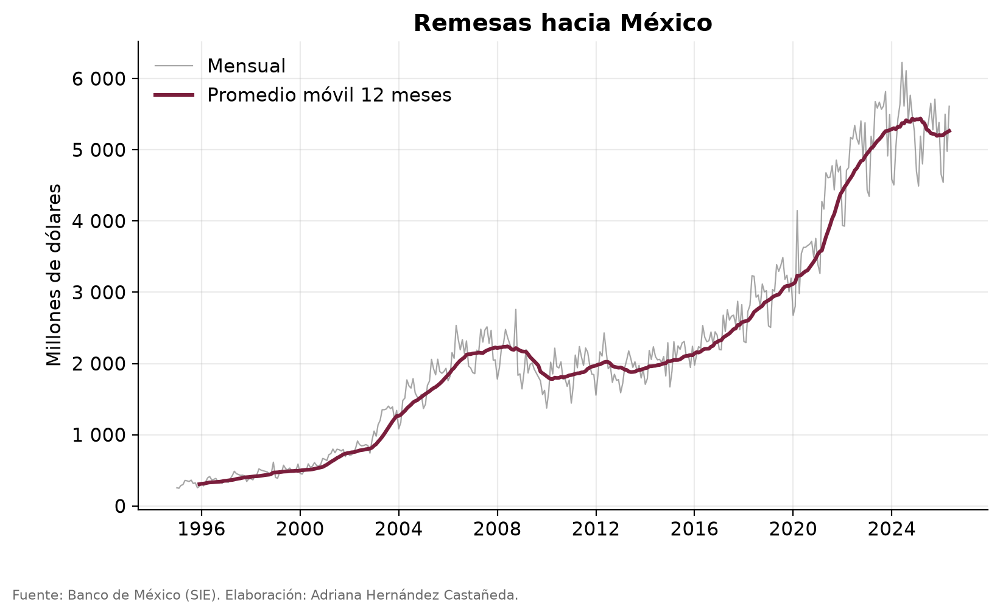

Open research · Banxico · ACS/IPUMS
Who sends money home?
Remittances to Mexico now run at roughly US$63 billion a year, and policy discussion treats the senders as one undifferentiated mass. This project joins Banco de México's remittance flows, by US state of origin, with the sex composition of the Mexican-born population in each state. It extends my peer-reviewed research on the changing sex ratios of US immigrant communities.
Finding 1Totals mislead; rates inform
California sends the most money in absolute terms, US$18.7 billion over the last four quarters, but only about $4,700 per Mexican-born resident. Florida ($8,900), Georgia ($8,500) and North Carolina ($8,300) send 1.7 to 1.9 times more per migrant, and smaller new corridors like Alabama exceed $14,000, roughly three times California. Ranking states by totals just ranks their populations; per-migrant flows invert the map.

Finding 2The high-remitting corridors are the male-skewed ones
The heavy per-capita senders run 118 to 133 men per 100 women, against 105 in California and 96 in Arizona. That pattern is consistent with newer, work-cycle migration remitting intensively while settled, family-based communities remit less per person. It is the corridor-level echo of the sex-ratio dynamics in my 2019 paper, and the working paper develops it formally.

Finding 3Growth can hide a demographic transition
As corridors mature, sex ratios balance and per-migrant remittances tend to fall. So the aggregate boom below can coexist with declining sending intensity, and the exposure of each Mexican state depends on which corridors feed it. Distinguishing volume growth from behavior change is exactly what the corridor panel is built for.

MethodReproducible without credentials
The pipeline joins Banxico's SIE (national monthly since 1995, by US state since 2013), the public ACS PUMS for the sex composition of the Mexican-born population, and CONAPO denominators, with deflators documented. One command reproduces everything from bundled samples; the full run needs no credentials, and free Banxico and IPUMS keys are optional accelerators. No microdata are redistributed.
ResumenEn español
Las remesas hacia México corren a ~US$63 mil millones al año. California envía más dinero en total, pero no más por migrante: ~$4,700 por persona nacida en México, contra $8,300–8,900 en Florida, Georgia y Carolina del Norte, y ~$14,000 en corredores nuevos como Alabama. Los corredores que más remiten per cápita son los de composición más masculina (118–133 hombres por 100 mujeres). Extensión de mi artículo arbitrado de 2019 en el Journal of Economics, Race, and Policy. Código y working paper.